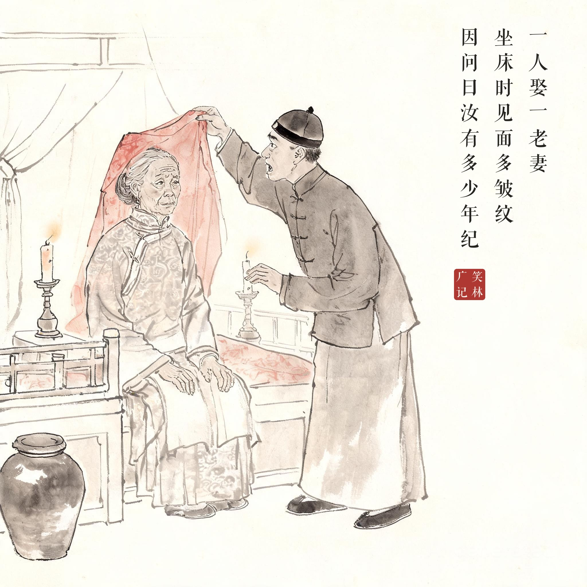
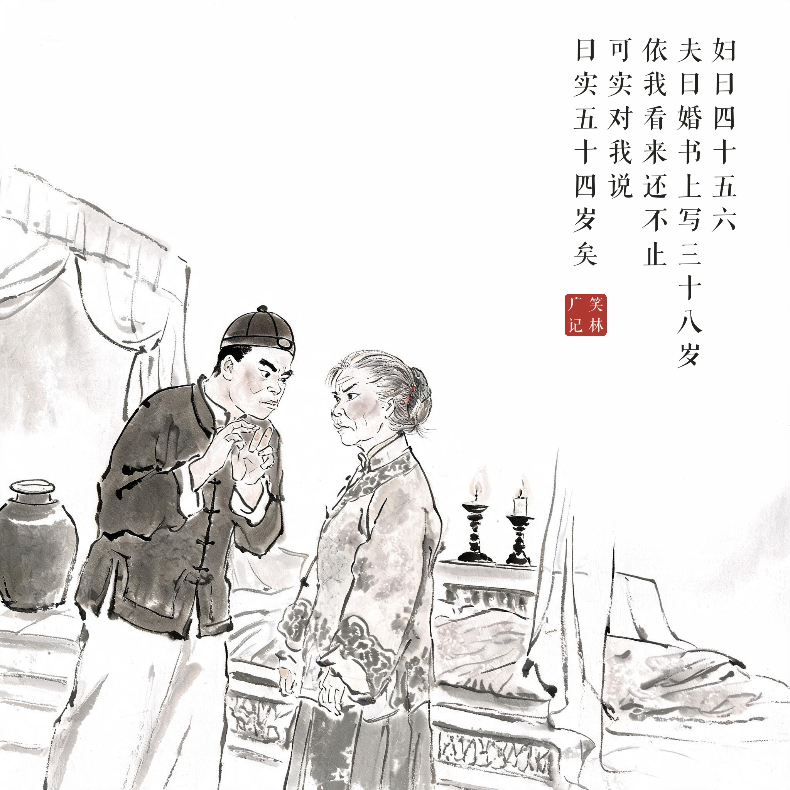
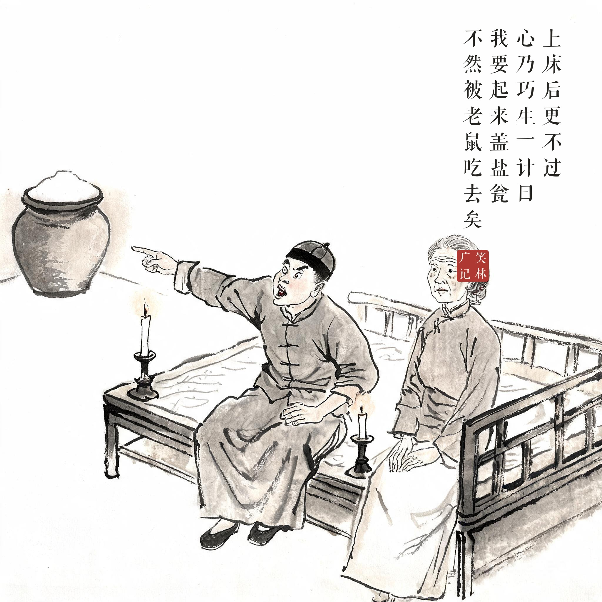
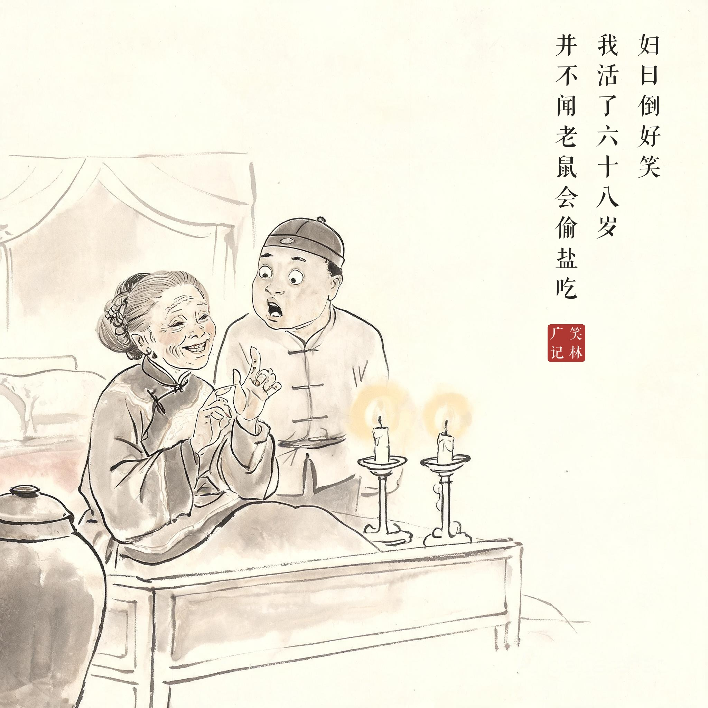

《笑林广记 · 闺风部》（[清]游戏主人纂集）
一人娶一老妻，坐床时，见面多皱纹，因问曰："汝有多少年纪？"妇曰："四十五六。"夫曰："婚书上写三十八岁，依我看来还不止四十五六，可实对我说。"曰："实五十四岁矣。"夫再三诘之，只以前言对。上床后更不过，心乃巧生一计，曰："我要起来盖盐瓮，不然被老鼠吃去矣。"妇曰："倒好笑，我活了六十八岁，并不闻老鼠会偷盐吃。"
有人娶了个年长的妻子，坐床时见她满脸皱纹，就问年纪。妇人说四十五六。丈夫说："婚书上写的是三十八，依我看还不止四十五六，跟我实说。"妇人说："其实五十四了。"再问就咬死不松口。丈夫躺下后越想越不对，心生一计："我得起来把盐瓮盖上，不然要被老鼠偷吃了。"妇人脱口而出："真可笑——我活了六十八岁，从没听说过老鼠会偷盐吃！"
一场"年龄审讯"的攻防战：婚书、目测、坦白三关都过了，最后败在一个盐瓮上——撒谎的人，最怕的是装糊涂的问题。